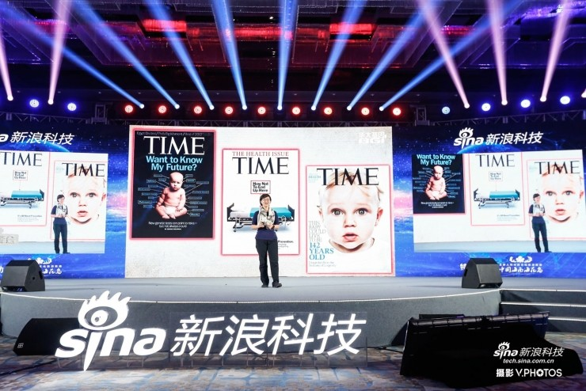
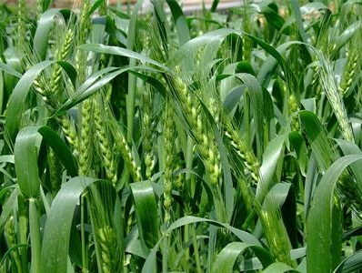
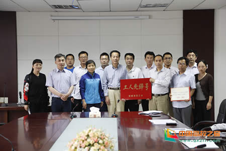

近日，合成生物学国际顶尖赛事——国际遗传工程机器设计竞赛（International Genetically Engineered Machine Competition，iGEM）2016全球总决赛在美国波士顿海因斯会议中心落幕， 上海交通大学的两支参赛队伍SJTU-Software和SJTU-BioX-Shanghai再度获得金牌。

上海交通大学团队再度斩获国际基因工程机器设计大赛金牌
2016.06.22 22:20


